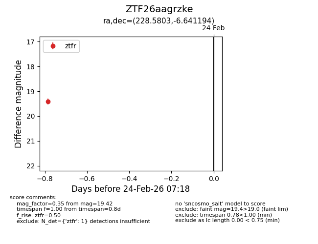
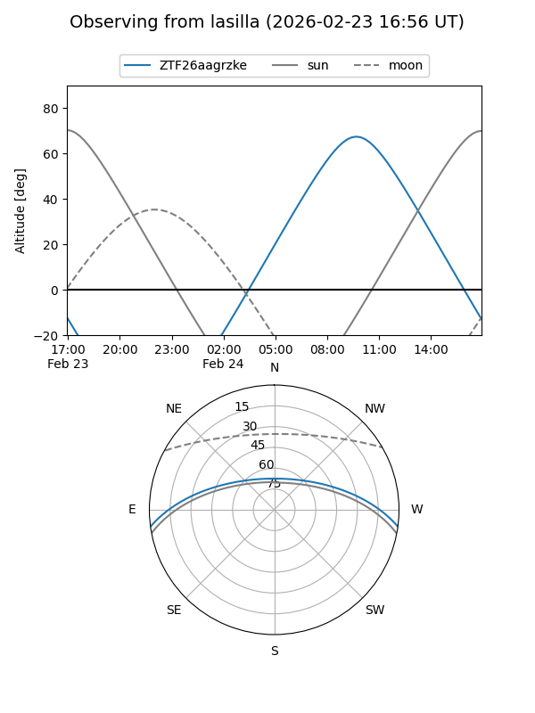
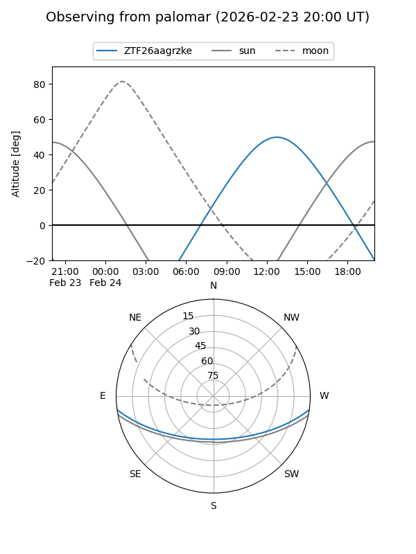

ZTF26aagrzke
Target ZTF26aagrzke at 2026-02-24 09:08
Aliases and brokers:
FINK: link
Lasair: link
ALeRCE: link
alt names
ZTF26aagrzke (ztf,fink_ztf)
Coordinates:
equatorial (ra, dec) = 228.5803,-6.64119
equatorial (HMS+DMS) = 15:14:19.28,-06:38:28.30
galactic (l, b) = (353.8702,+41.68017)
Flags:
Photometry:
last ztfr=19.42
1 ztfr detections
Lightcurve

Visibility


Additional plots